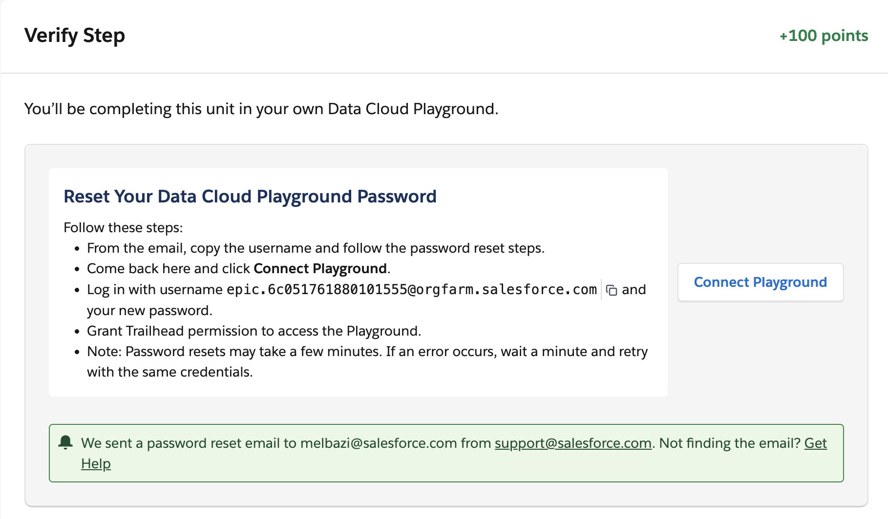
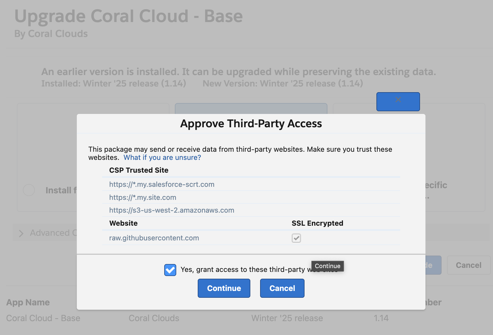
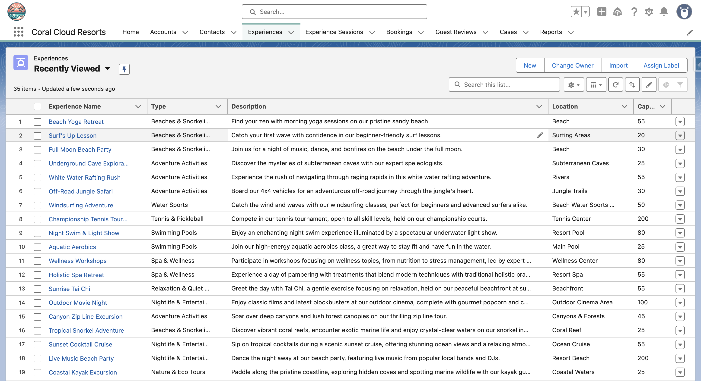
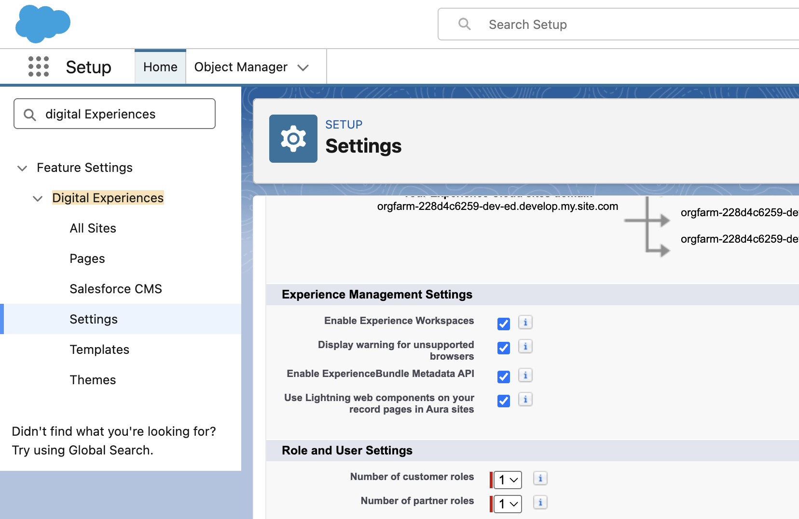
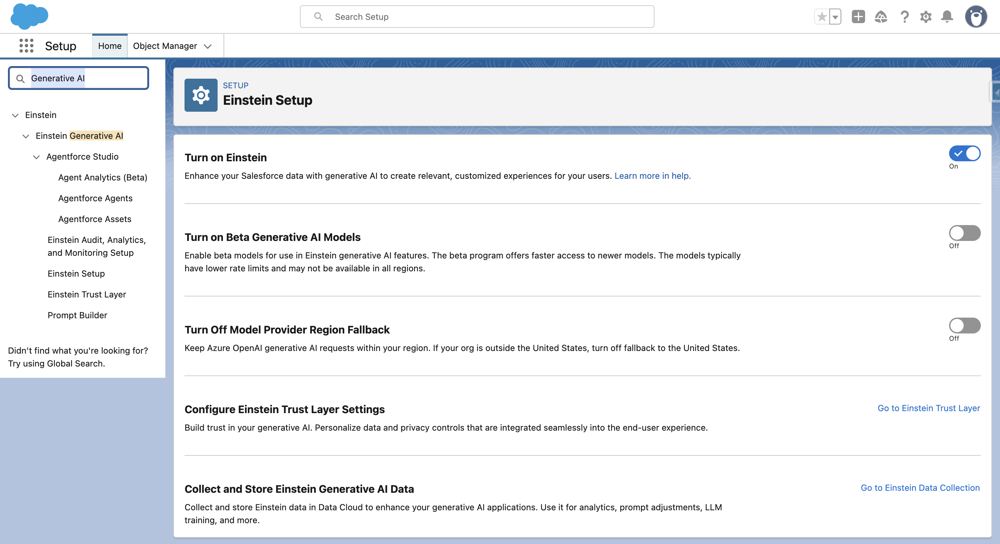
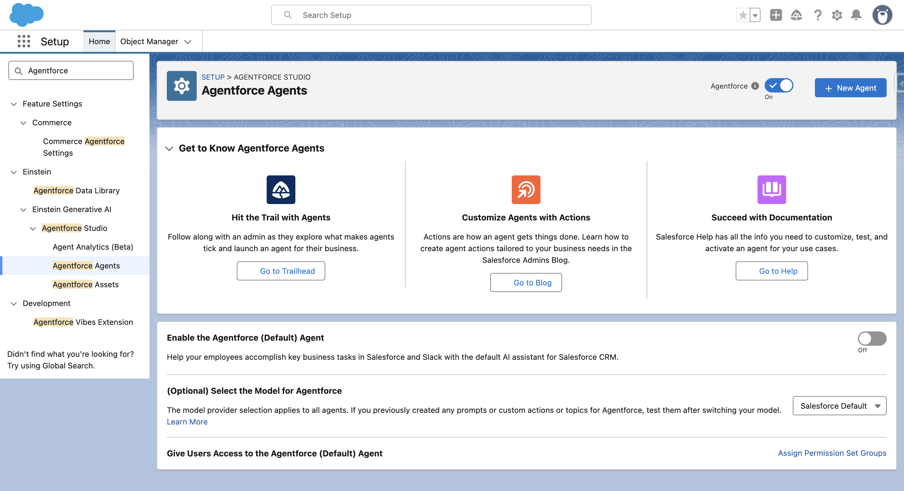

Agentforce Workshop
0%
Complete
0 / 0 steps
Your guide to creating an autonomous, AI-powered service agent using Agentforce, Flows, Apex, and Prompt Builder on the Salesforce Platform.
You will construct a multi-functional Agentforce Service Agent (ASA) for Coral Clouds. This agent will be deployed directly to an Experience Cloud site, offering automated support and seamless handoff to human agents when needed.
The core goal is to enhance customer support and reduce manual workload by leveraging Salesforce with Agentforce capabilities.
💡 Complete these steps before the workshop to ensure you're ready to start building immediately.
Self-Service Setup through Trailhead
⚠️ IMPORTANT:
Recently we have seen some issues in the newly created orgs, please make sure the org has Knowledge Articles and Account records.
If one of these is missing consider creating another org quickly to avoid missing some parts of the agent!
⚠️ Make sure to save and keep your credentials safe! You'll need them throughout the workshop.

Install the Coral Cloud base package
lightning.force.com with:
/packaging/installPackage.apexp?p0=04tWx0000001taLIAQ
for example, this:
https://orgfarm-228d4c6259-dev-ed.develop.lightning.force.com/lightning/page/home
becomes this:
https://orgfarm-228d4c6259-dev-ed.develop.lightning.force.com/packaging/installPackage.apexp?p0=04tWx0000001taLIAQ

Set up permissions and import sample data

Install and set up the Coral Cloud Experience Cloud site package
lightning.force.com with:
/packaging/installPackage.apexp?p0=04tWx0000001fqjIAA

Enable Einstein for Generative AI capabilities

Enable Agentforce to start building AI agents
⚠️ If it is not available, continue to refresh the page until the cache has reset.

✅ You're now ready to start the workshop! All required features are enabled.